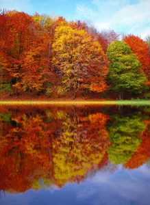

One of the best parts of fall are the gorgeous colors that deciduous trees show off. Colors that span a full range. Leaves go from green to yellow to orange to red until they turn brown and fall off. This month, we’re going to take a closer look at what makes leaves change color and what affects how vibrant or dull those colors are. If you need Monmouth County tree service any time of year, contact us! We serve all of Ocean County and Monmouth County.
How Do Trees Know It’s Fall?
Deciduous trees always know what time of year it is. When temperatures start to rise after winter, they know its spring and time to start growing leaves. Similarly, as days get shorter and temperatures drop, deciduous trees know it’s time to start storing nutrients for winter. Surprisingly, the most influential factor is not the temperature, but the sunlight. As there is less and less daylight, trees get the message that winter is coming. Part of the process of getting ready for their dormant season is to drop their leaves. This allows them to reduce their energy usage during a season when there are little nutrients to be absorbed.
What Causes Fall Colors?
The chemicals contained within the leaves is what gives them their color. During long spring and summer days, the chemical chlorophyll is what absorbs sunlight and gives leaves their green color. Once the tree knows that autumn is here, they begin to wall off their leaves to preserve energy. The breakdown of the chlorophyll is the first step of the color change. Other chemicals that are contained within leaves are carotenoids, anthocyanins, and tannins. These turn leaves all types of colors that are concealed by the presence of chlorophyll. Carotenoids give leaves yellow and orange color, anthocyanins turn leaves hues of reds and purples, and tannins are the last remaining chemical that turns leaves brown.
Influences on Fall Colors as Seen by Monmouth County Tree Service
The top three factors that affect the brightness or dullness of autumn trees are temperature, precipitation, and soil moisture. For the most vivid colors, the ideal conditions are lots of rain during spring and summer followed by a dry and sunny autumn. Slowly decreasing daylight in combination with cooler nights is what brings about a vivid fall show. A lack of moisture as seen in drought conditions can trigger trees to begin the fall process too soon. This results in leaves that fall from the tree before they go through a full color change process. Similarly, if temperatures drop too low, too fast, it can shock the trees into the same reaction and cause early leaf drop off severely stunting the display of fall colors.
Monmouth County Tree Service Lets Us Enjoy All the Fall Colors
While a trip to the mountains will give you the best view of fall foliage, even the trees in Monmouth County put on a show. The color palette of any place with broadleaf deciduous trees will change every fall. If you are looking to add a deciduous tree to your yard and want a specific fall color, check out this tree color list:

Aspen: Golden- Beech: Golden brown
- Birch: bright yellow
- Quaking Aspen: yellow
- Poplar: golden yellow
- Sugar Maple: orange-red
- Black Maple: glowing yellow
- Sweetgum: yellow, red, and purple
- Red Maple: bright scarlet
- Silver Maple: muted green
- Dogwood: purple-red
- Oaks: brown or russet
- Hickory: golden bronze
Find out more about our Monmouth County tree service and contact us when you’re ready to schedule your free estimate.